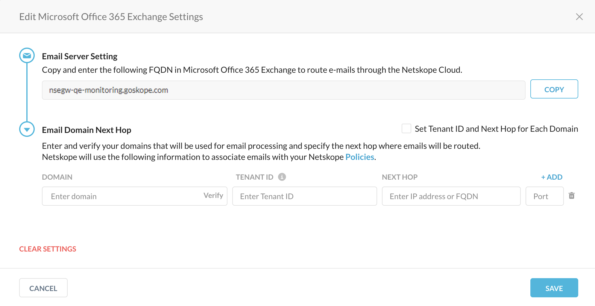
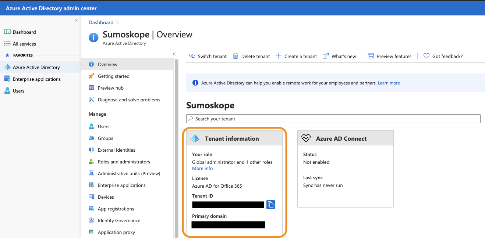
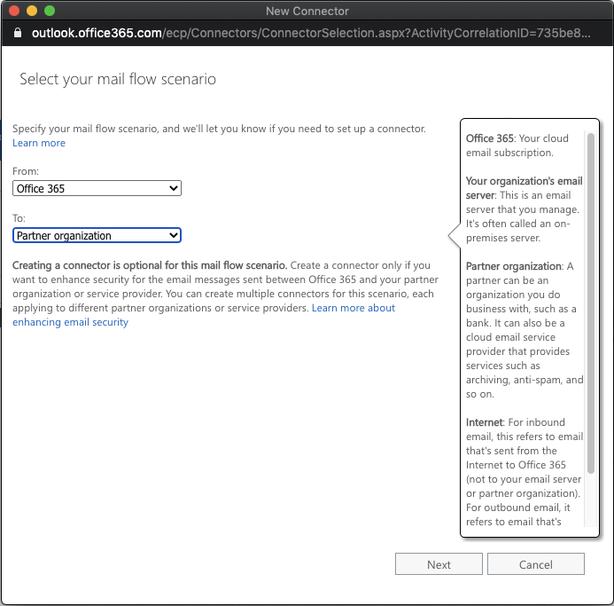
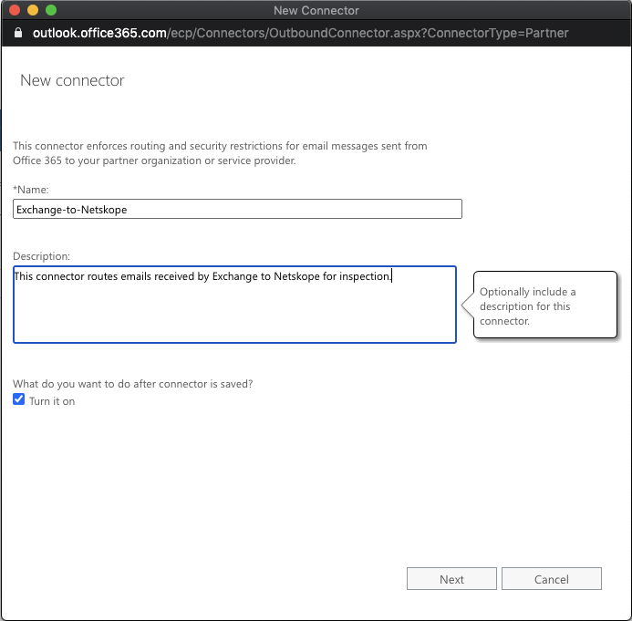
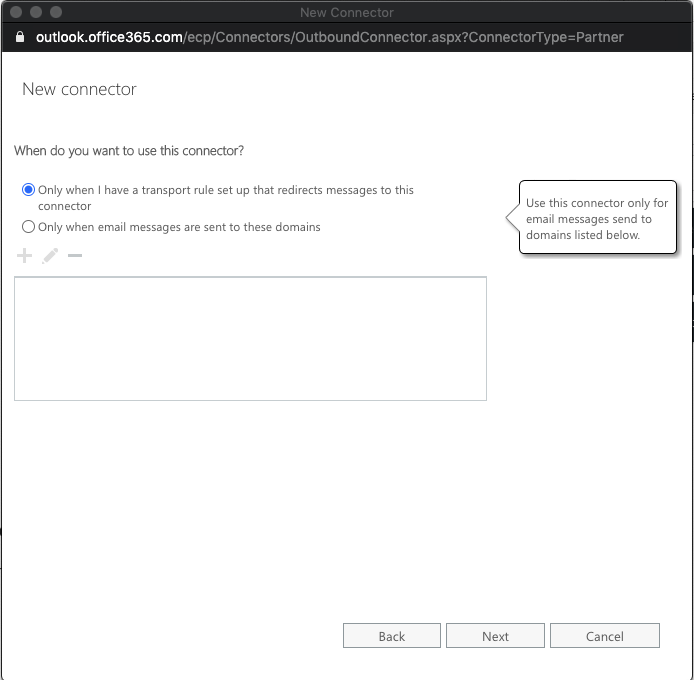

Configure Netskope SMTP Proxy with Microsoft O365 Exchange
When you configure Netskope SMTP Proxy with Microsoft O365 Exchange, all outgoing emails from Microsoft O365 Exchange are sent to Netskope SMTP Proxy for policy evaluation.
The configuration involves the following two steps,
Configure the Microsoft O365 Exchange server and the upstream MTA in the Netskope tenant
In the Netskope tenant UI, navigate to Settings > Security Cloud Platform > Mail Relay and click SMTP. Microsoft Office 365 Exchange is selected by default.
In the Microsoft Office 365 Exchange section of the SMTP page, click Edit.
In the Edit Microsoft Office 365 Exchange Settings dialog box, copy the Netskope domain name under Email Server Setting to a notepad. You will require this domain name when configuring Netskope SMTP Proxy as a connector in Microsoft's Exchange admin center.
In the Email Domain Next Hop section, specify the Microsoft O365 Exchange primary domain and tenant ID under Domain and Tenant ID.
Warning
Configure each of your MAIL FROM domains. A failure to do this will end up in the email being rejected.
For information on finding the primary domain and tenant ID in Microsoft O365 Administration see Finding the Microsoft O365 Exchange Tenant ID and Primary domain.
In the Next Hop section, specify the IP/FQDN and Port of the upstream MTA. Click Save.
Finding the Microsoft O365 Exchange Tenant ID and Primary domain
Log into Microsoft O365 Administration and in the left pane select Admin. The Microsoft 365 admin center page is displayed.
In the left pane of the Microsoft 365 admin center page, click ... Show All to view all the options and select Azure Active Directory. The Azure Active Directory admin center page is displayed.
Click Azure Active Directory in the left pane and copy the Tenant ID and Primary domain. You must specify the tenant ID and primary domain in your Netskope tenant.

Configure Netskope SMTP Proxy as an outbound connector in Microsoft's Exchange admin center
Log into Microsoft O365 Administration and in the left pane select Admin. The Microsoft 365 admin center page is displayed.
In the left pane of the Microsoft 365 admin center page, click ... Show All to view all the options and select Exchange. The Exchange admin center page is displayed.

In the left pane of the Exchange admin center page, click mail flow. By default, the rules are displayed on the screen.
You can create a new rule for Netskope routing that will enable you to disable the Netskope connector at any time without impacting your existing routing rules.
Click the + icon to create a new rule.
Select connectors. Click the + icon to create a new connector.

In the New Connector window, select your mail flow. In the From field select Office 365 and in the To field select Partner organization. Click Next.
Specify a name to identify this connector and provide a description. Click Next.
In the following screen choose to use this connector only when a transport rule is set up. Click Next.
In the following screen, choose a method to route the email messages. Select Route email through these smart hosts and click the + icon to add the hosts.
ProvideNetskope's domain name you copied previously as the host name of the partner organization.

In the next screen, select the security options as shown in the image below to enable Office 365 to securely connect to Netskope's SMTP proxy.

To ensure that the traffic is going to Netskope cloud you can specify the CN of the certificate. The connection between Exchange and Netskope cloud uses a TLS connection over SMTP. During the TLS handshake the exchange uses a CA certificate. The CN of the CA certificate is *.goskope.com.
Click Next.
Review your settings and click Next. The new connector is created.
You can specify a test email and click Validate to validate the connector.
When the connection between Microsoft O365Exchange and Netskope SMTP Proxy is up, Netskope SMTP Proxy replies with a 250 OK in the message to indicate that the connection was successful.
Note
Currently, the "send test email" between Microsoft O365 Exchange and Netskope SMTP Proxy fails with an error even though the connection is successful.